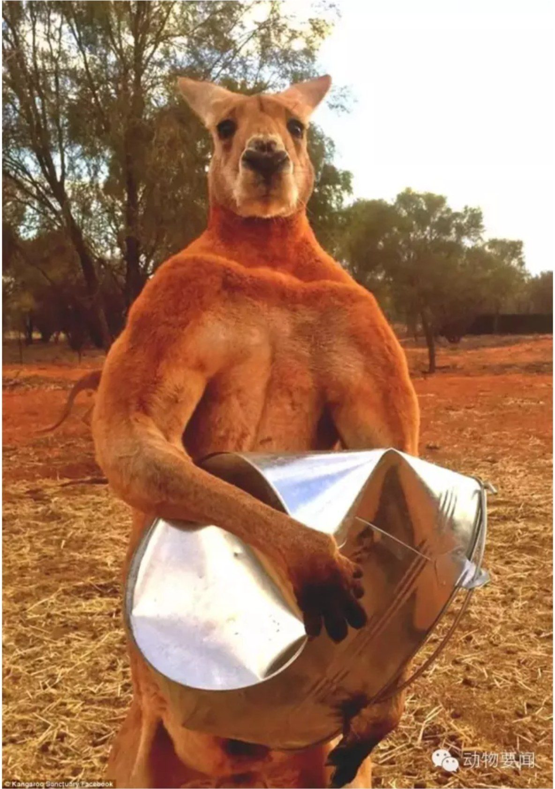
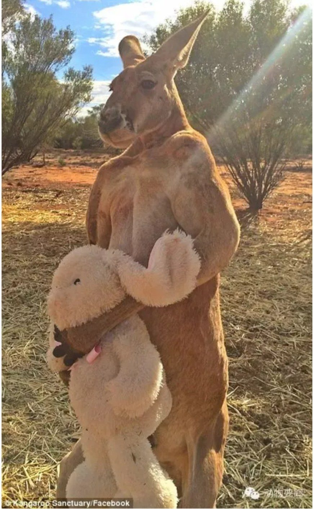
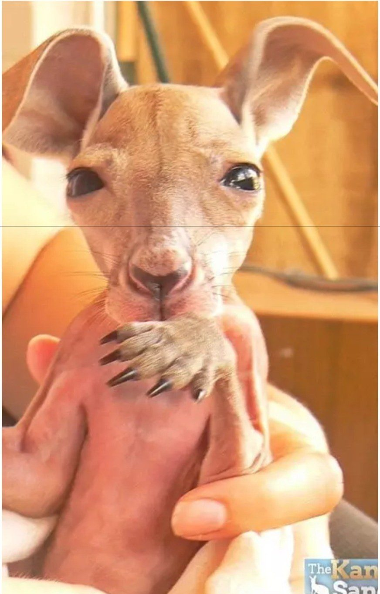

红袋鼠Roger收到毛绒兔子 从此再没撒过手
本来，先登上头条的是一只大灰袋鼠DAVE。它突然出现在澳大利亚North Lakes的街上闲逛，把遛狗的居民们吓了一跳——它有2米高，体型在灰袋鼠里算很大的啦！
不过很快，DAVE的对手出现了：红袋鼠ROGER。它和DAVE体型差不多，也两米出头，接近两百斤，但是更壮。ROGER平时既喜欢抱毛绒兔子，又喜欢练拳击。
ROGER现在9岁，住在澳大利亚北领地爱丽丝泉的袋鼠救助中心，2006年被工作人员从高速公路上救回来。今年复活节前，ROGER收到了粉丝送的毛绒兔子，它好像非常喜欢，之后就一直抱在怀里不松手啦！
工作人员说，ROGER平时喜欢锻炼、追打饲养员、揉烂食物桶，以及保护救助中心里的雌袋鼠。据了解，红袋鼠一般寿命12到15岁，体型比东部灰大袋鼠大很多。



编译自《每日邮报》、国际在线等